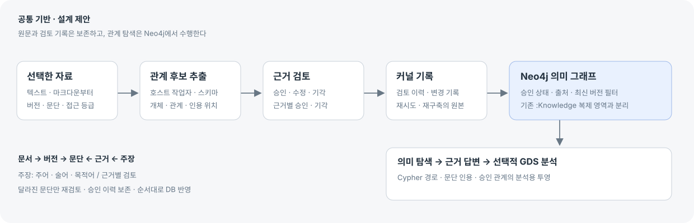

A · 지식 구축·검토
먼저 쓸 만한 관계와 근거를 모읍니다.
추천: 첫 구현원문과 후보를 비교하는 데 강함 · 검토 작업 필요
Neo4j 공식 자료와 현재 구현을 바탕으로 비교하는 네 가지 산출물. 공통 데이터 기반은 같고, 먼저 완성할 사용 흐름이 다릅니다.
질문·표본 → 스키마·안정 ID → 원문 버전·근거 → 후보 검토 → Neo4j 질의 순서입니다.
먼저 쓸 만한 관계와 근거를 모읍니다.
추천: 첫 구현원문과 후보를 비교하는 데 강함 · 검토 작업 필요
대상을 중심으로 연결의 이유를 찾습니다.
추천: 기본 탐색 화면관계의 전체 맥락에 강함 · A의 기반 필요
질문에서 답과 사용한 근거로 이동합니다.
후속: 검색 비교 평가 뒤질문 해결에 강함 · 답변 품질·비용 평가 필요
묶이는 주제와 연결의 중심을 봅니다.
후속: 충분한 검토 자료 뒤패턴 발견에 강함 · 분석 조건·해석 검토 필요
A의 검토 + B의 간단한 이웃·근거 보기를 첫 구현으로 추천합니다. 네 안은 같은 기반 위에서 중심 작업을 비교하는 방향입니다. C와 D는 후속 확장입니다.

‘검토 승인’은 근거를 확인했다는 뜻이며, 원문 주장의 진실을 자동 보증하지 않습니다. 이 화면의 조작은 새로고침하면 초기화됩니다. A~C의 각 관계에는 근거 1개를 둔 가상 표본을 사용합니다. 복수 근거·변경 안 된 문단 이관·실제 DB 재구축은 설계 계약에 기술했습니다.